Escala comercial y conexiones fieles
6 propuestas nuevas · todavía no publicadas
JUGU034 pequeño, cuatro cobertores AirPods más pequeños y HUB026 con puertos corregidos e indicador documentado.
JUGU036 conserva su imagen. TELF001 y TELF012 siguen aprobados y cerrados.
Dos juguetes de tamaño diferente
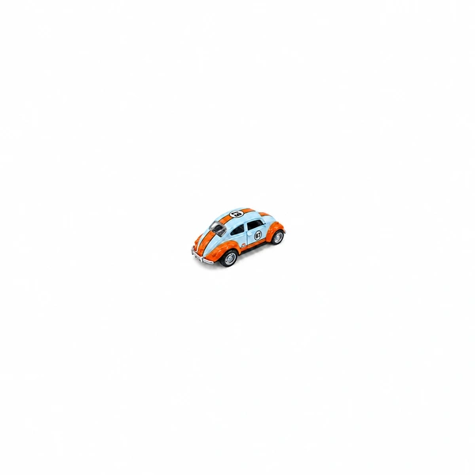
JUGU034 · pequeño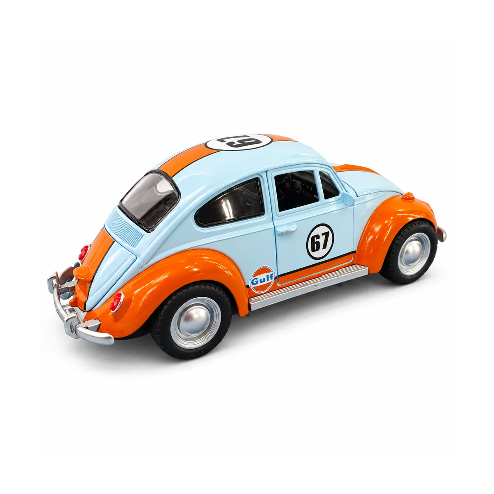
JUGU036 · mayor · conservadoEscala visual orientativa según aclaración del propietario; no expresa medidas físicas certificadas ni un conjunto de venta.
JUGU034 · Carrito clásico con rayas | número 67
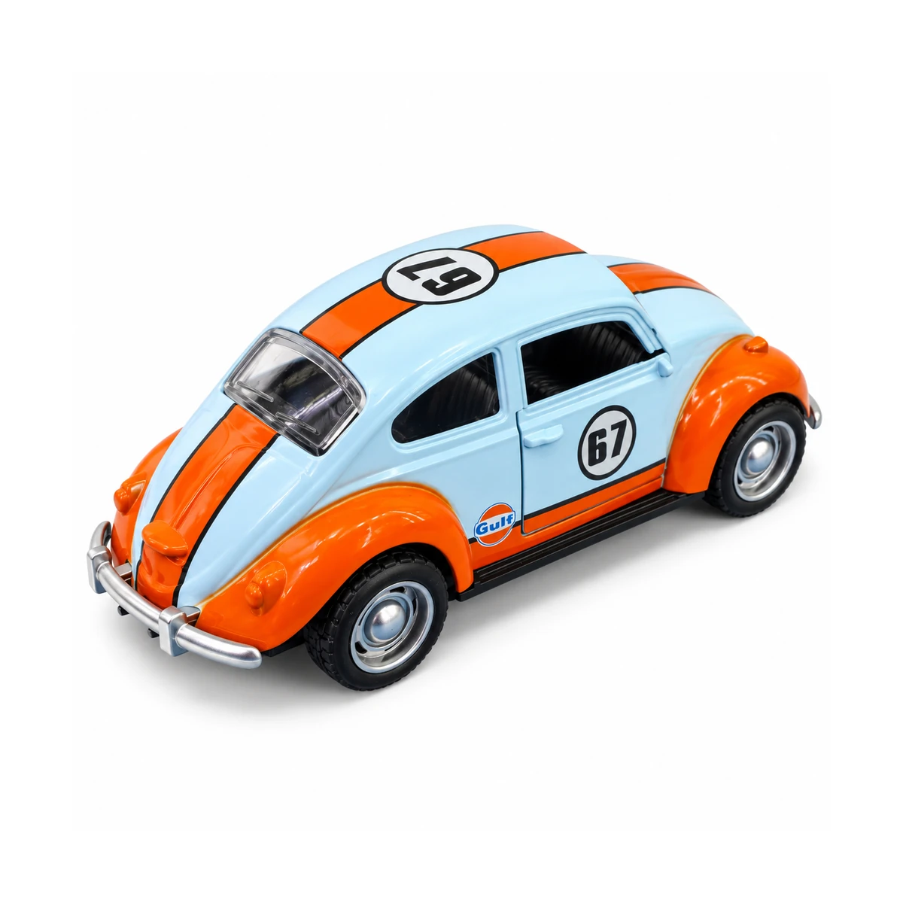
Actual · conservadaPropuesta para revisiónEncuadre reducido para distinguir el juguete pequeño de JUGU036. La identidad diferente y la diferencia aproximada de tamaño fueron confirmadas por el propietario; no se presentan medidas físicas inventadas.
Descargar propuesta de 1200 pxCOBE004 · Funda decorativa para estuche AirPods 4 | diseño de control
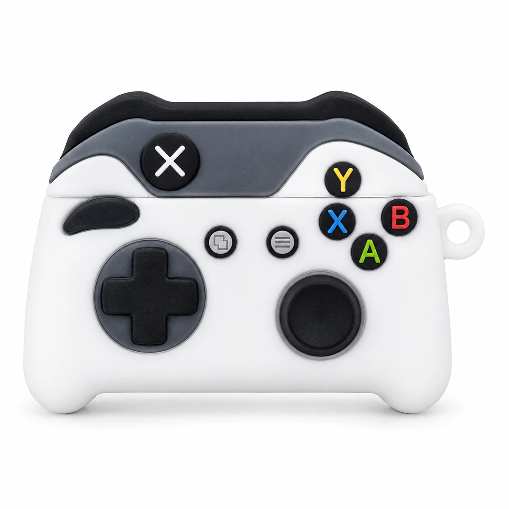
Actual · conservada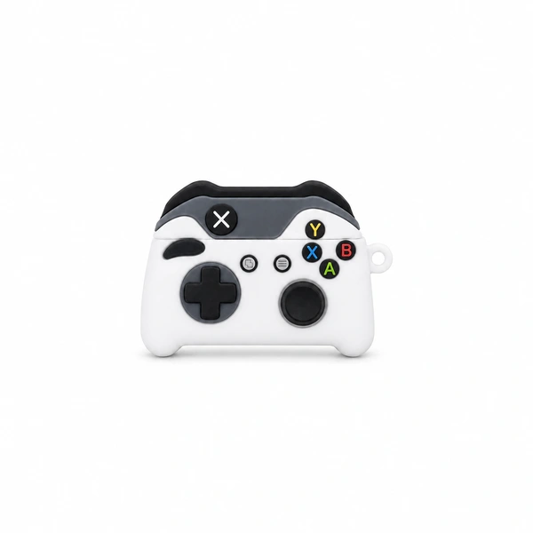
Propuesta para revisiónPresentación más pequeña: funda para estuche AirPods con diseño de control. Se conserva el diseño y no se añade un mando ni audífonos a la venta.
Descargar propuesta de 1200 pxCOBE006 · Cobertor floral para estuche AirPods Pro 2
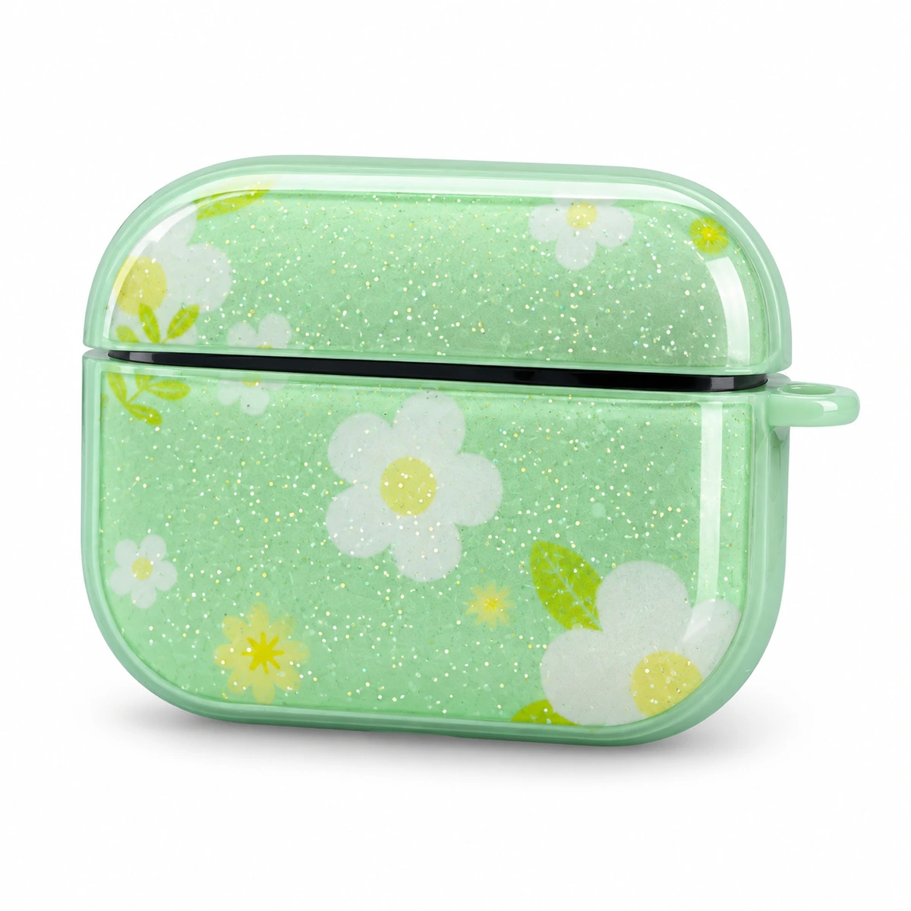
Actual · conservada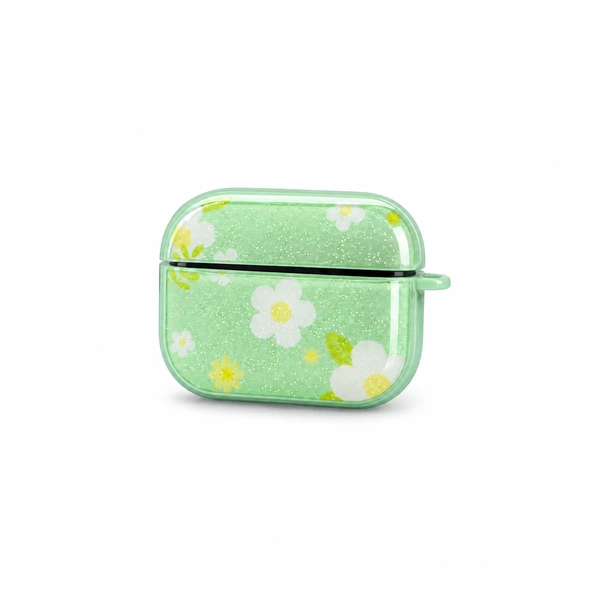
Propuesta para revisiónPresentación más pequeña del cobertor floral para estuche AirPods. Color, tapa y proporciones conservados en la propuesta.
Descargar propuesta de 1200 pxCOBE007 · Cobertor diseño amplificador para AirPods 4
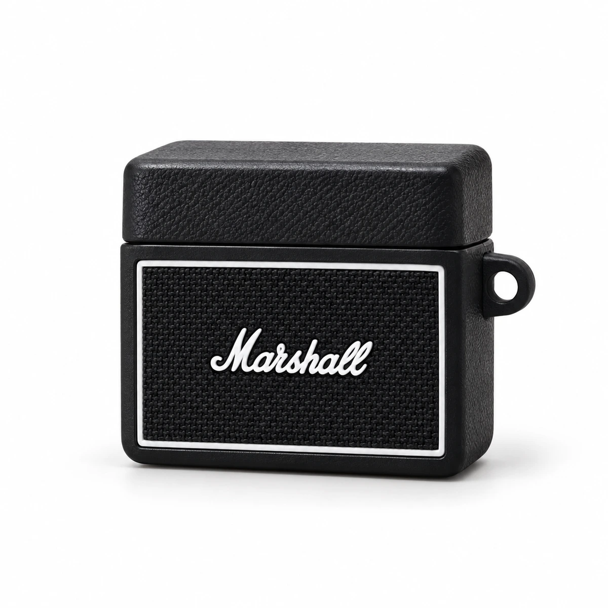
Actual · conservada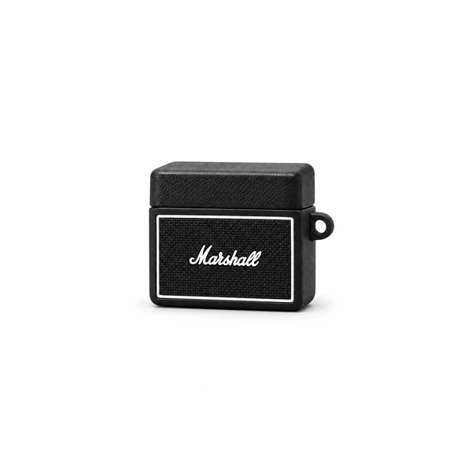
Propuesta para revisiónPresentación más pequeña del cobertor con diseño de amplificador; se reconoce como funda para estuche AirPods.
Descargar propuesta de 1200 pxCOBE009 · Estuche Spigen para AirPods Pro 2
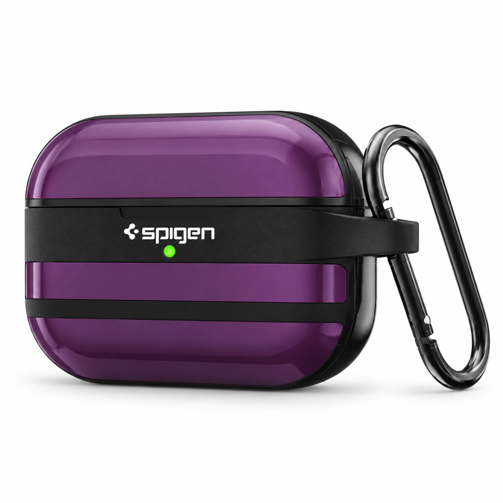
Actual · conservada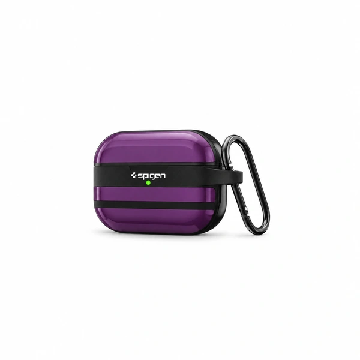
Propuesta para revisiónPresentación más pequeña del estuche Spigen con su mosquetón completo y diseño de origen.
Descargar propuesta de 1200 pxHUB026 · Hub UGREEN Uno CM888 USB-C 6 en 1
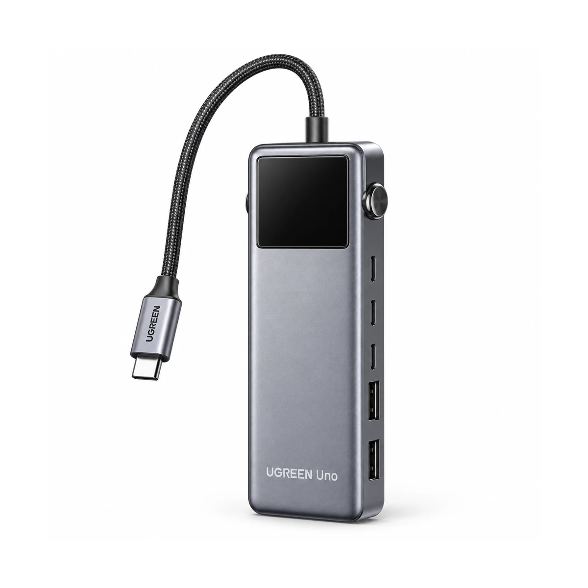
Actual · conservada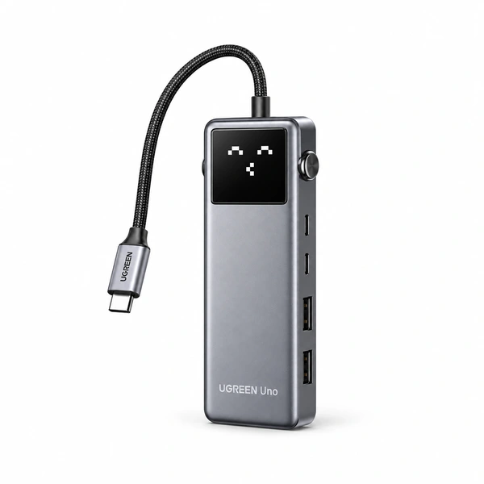
Propuesta para revisiónCorrección propuesta del lateral: dos USB-C y dos USB-A, frente a los tres USB-C y dos USB-A de la imagen actual. Indicador encendido con el rostro pixelado documentado en el empaque propio. Modelo CM888 / P/N 35998 contrastado con UGREEN.
Foto propia de Drive · Modelo oficial UGREEN 35998
Descargar propuesta de 1200 pxReferencias para avanzar sin nuevas fotos
35 casos investigados. Se localizaron fuentes del fabricante para Targus ACH114US, UGREEN 35998 y Meetion BTK001 y documentación del UGREEN 60600. No se aprueban vistas ocultas desde coincidencias genéricas.
Consultar resultados y fuentes por SKU
No se solicitan nuevas fotografías en esta entrega. Originales y datos comerciales intactos; ninguna propuesta está publicada.